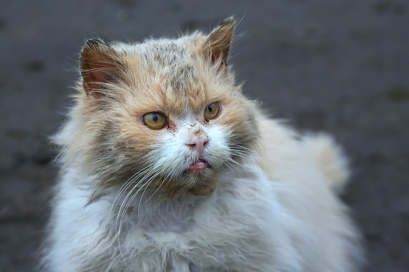
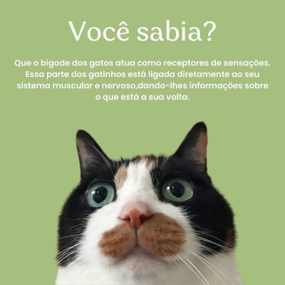

Como podemos ajudar os gatos a suportar o calor?
Durante dias quentes, é essencial tomar medidas para garantir o conforto dos nossos felinos e protegê-los do calor excessivo. Aqui estão algumas dicas práticas:
Hidrate bem o gato: Certifique-se de que ele tenha acesso constante a água fresca e limpa. Coloque vários recipientes de água em diferentes locais da casa e considere adicionar gelo para manter a temperatura fresca por mais tempo.
Crie espaços frescos: Disponibilize áreas com sombra e boa ventilação para que ele possa descansar. Usar ventiladores ou o ar-condicionado em horários mais quentes também é uma boa ideia.
Tapetes refrescantes: Tapetes ou almofadas geladas podem ajudar a reduzir a temperatura corporal do gato. Eles são encontrados em pet shops.
Escove a pelagem regularmente: Remover pelos soltos ajuda a pelagem a "respirar" e evita que o gato sinta mais calor do que deveria. Para gatos de pelo longo, consultar um veterinário sobre cortes de pelo também pode ser uma opção.
Evite horários de calor intenso: Caso ele tenha acesso a áreas externas, limite esse acesso aos horários mais frescos, como o início da manhã ou o fim da tarde.
Cuidado com superfícies quentes: Pisos de cimento ou superfícies quentes podem machucar as patas delicadas dos gatos. Evite deixar o gato andar nesses locais.
E lembre-se, se um gato apresentar sinais de superaquecimento, como respiração ofegante, letargia ou salivação excessiva, é importante procurar um veterinário imediatamente.
Gatos Precisam de Banhos?
Normalmente, os gatos não precisam de banho com a mesma frequência que os cães. Eles são incrivelmente higiênicos e passam bastante tempo se lambendo para se manterem limpos. No entanto, existem algumas situações em que um banho pode ser necessário:
Quando estão muito sujos: Se o gato se sujar com algo pegajoso, tóxico ou malcheiroso que ele não consiga remover sozinho, um banho pode ser necessário.
Problemas de pele: Algumas condições de pele podem requerer banhos medicinais.
Parasitas: Infestações de pulgas, carrapatos ou outros parasitas podem exigir banhos específicos.

Lembre-se de usar produtos próprios para gatos e, se possível, consulte um veterinário antes de dar banho no seu felino. A maioria dos gatos não gosta muito de água, por isso tenha paciência e cuidado extra para evitar estressá-los.
Quais produtos são seguros para banho de gatos?
Para dar banho no seu gato de forma segura, é importante usar produtos específicos para felinos. Aqui estão algumas opções recomendadas:
Shampoo específico para gatos: Esses shampoos são formulados para manter o pH balanceado da pele dos gatos e evitar irritações. Exemplos incluem o Shampoo Espree Natural Silky Show Cat e o Shampoo Hipoalergênico Burts Bees for Pets com Manteiga de Karité e Mel.
Alternativas ao banho tradicional: Banhos a seco, lenços umedecidos próprios para pets e produtos de limpeza naturais sem sabão são boas opções para gatos que não gostam de água.
Cuidados extras: Evite usar shampoos para cães ou produtos com óleos essenciais, pois podem ser tóxicos para os felinos.
Saiba ainda mais sobre banhos em gatos !

Acesse Aqui para saber ainda mais sobre o mundo felino